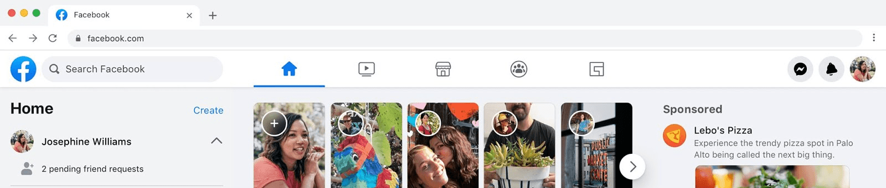

UI designers aren't doing UI design anymore
9 May 2020
There are way too many visually stunning products out there which are a nightmare to use. How has this happened? It's probably too hard to list all the reasons and I'd rather focus on solutions but let's outline a few:
- Dribbble. Obviously you can't blame everything on a single platform. What I mean by Dribbble is the delivery and showcasing of "work". It's generally a single 800x600 image without a lot of context. It's maximised for visual appeal. Just go to the shots page right now (https://dribbble.com/shots) and see if you can find a shot that isn't visually eye-popping. Or find a shot which outlines the problem being solved for the user. This "dribbbilisation" of deisgn has been written about and I recommend you check it out: https://www.intercom.com/blog/the-dribbblisation-of-design/. So this is one issue.
- "big framework x" already has the answers. Bootstrap is probably a big one. In the years after bootstrap came out, half of the new web products on the internet looked like bootstrap. Most new AWS products these days are basically Bootstrap 3.0.0. Then they started to look a little nicer when they started to get skinned nicely with CSS. But in this case a lot of the hard user interface decisions were being pushed onto bootstrap. You use the jumbotron at the top. You have the nav template. Here is a card. This is the table. Again you can't blame a single framework for this either.
- Fundamental UI design isn't "fun". This is probably one of the big ones. Why think from first principles when other people can do that? We should stand on the shoulders of giants. We all can't be giants right? I disagree. We should all strive to learn more about our craft and share it with other people in our team and in our company. We shouldn't aim to recreate new UI paradigms. We should aim to understand what the fundamentals of UI design are and adhere to them when designing interfaces.
So how do we solve this? I… don't know exactly. My journey was almost all learning by doing. That's where I got most of my product wisdom from. Yes, you can learn from others but it's you that has to make the decision at the end of the day. So learn why you make the decisions you do. Try to quantify it to yourself. This is vital. You'll grow real quick this way.
Some shortcuts for me:
- Follow and read stuff that Ryan Singer puts out. He is a designer at Basecamp and he has many thoughtful pieces on approaching user interface design. His website: http://www.feltpresence.com/
- Read through Apple's Human Interface Guidelines (especially the macOS one, my fav). Get an idea for what their designers were thinking when designing a button or an alert box.
- Don't associate beauty with a well designed user interface. This took many years for junior UI designer Philip to break out of. Use products that are brutalist in nature but greatly enhance your life. Emacs did it for me.
- Understand your temperament must match up with your career. If you are always putting people down and have a big ego, you'll have a hard time creating a good user interface. It might be beautiful but it probably won't solve the problem the user is having.
Also as a final note… I'm in the process of writing a book about the fundamentals of UI design (what a coincidence right). It isn't ready yet but it'll be a cracker when it is. Want to add as many user interface wisdom nuggets in it as possible and hopefully it'll help with this greater issue we are seeing. I'll share it on twitter and on the newsletter so don't miss it!
p.s. the new facebook web UI has a top navigation with ONLY icons. No text. I guessed only 3 of the 5 icons and I've hand drawn hundreds of icons in my career. There is an issue here.
edit: the UI in question. taken from here. Do you know what all five icons at the top are just by looking at them?
